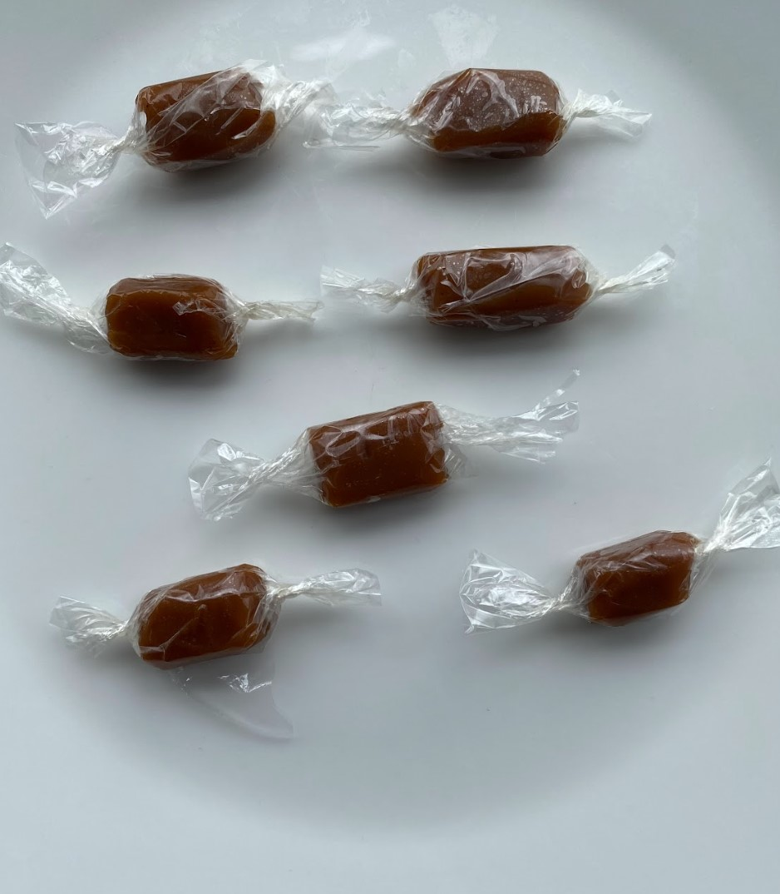
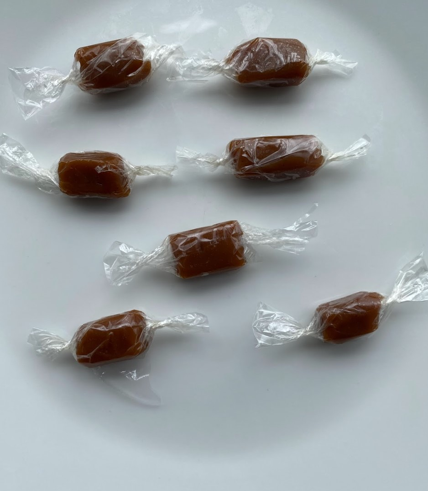

For my recent food product development assignment, I was tasked with redesigning an existing food product to enhance its sustainability—a project ideal for Year 9-10 students. I chose to recreate Werther's Original, focusing on reducing its environmental impact. The new design features edible wrappers made from natural, safe ingredients that dissolve in the mouth, eliminating waste. Additionally, I redesigned the external packaging to be 100% recyclable, using eco-friendly materials that are easy to recycle and reduce carbon footprint. This approach not only maintains the product's classic taste and appeal but also aligns with sustainable practices, catering to environmentally conscious consumers. The project encourages students to think creatively about sustainability in food technology and understand the importance of eco-friendly innovations.
 
